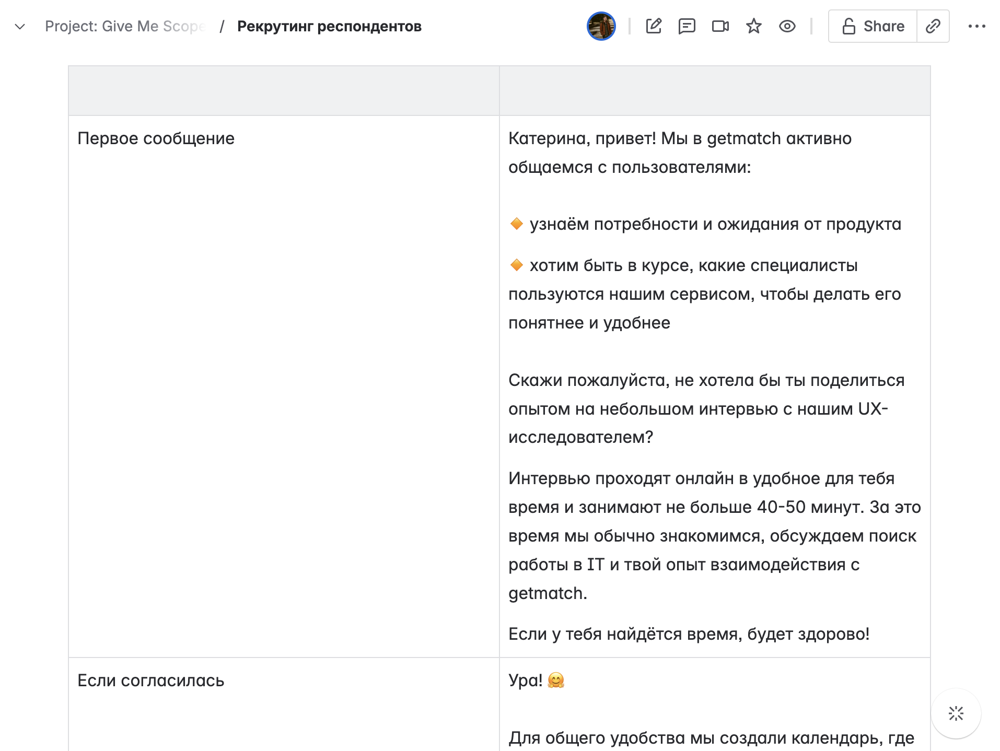
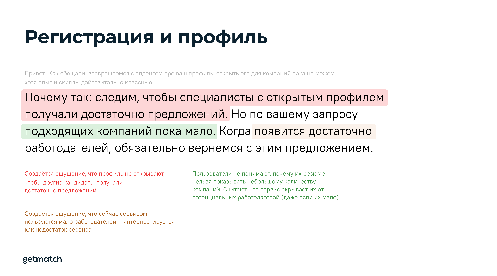
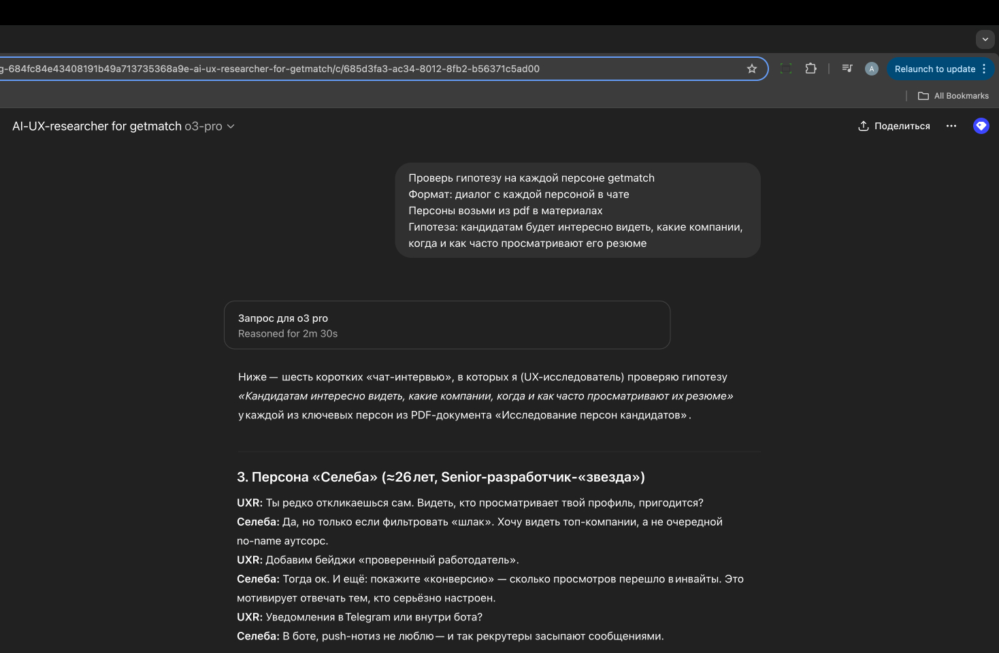

<!DOCTYPE html>
<html>
  <head>
    <meta charset="utf-8">
    <meta name="viewport" content="width=device-width, initial-scale=1.0">
    <meta name="description" content="Как мы сформировали персоны кандидатов в&amp;nbsp;продукте и&amp;nbsp;пользуемся ими до&amp;nbsp;сих пор">
    <meta property="og:type" content="article">
    <meta property="og:title" content="Исследование персон кандидатов getmatch • Артём Самсонов • Продуктовый дизайнер">
    <meta property="og:description" content="Как мы сформировали персоны кандидатов в&amp;nbsp;продукте и&amp;nbsp;пользуемся ими до&amp;nbsp;сих пор">
    <meta property="og:image" content="http://artemsamsonov.com/img/case-06.jpg">
    <meta property="og:locale" content="ru_RU">
    <meta name="twitter:card" content="summary_large_image">
    <meta name="twitter:title" content="Исследование персон кандидатов getmatch • Артём Самсонов • Продуктовый дизайнер">
    <meta name="twitter:description" content="Как мы сформировали персоны кандидатов в&amp;nbsp;продукте и&amp;nbsp;пользуемся ими до&amp;nbsp;сих пор">
    <meta name="twitter:image" content="http://artemsamsonov.com/img/case-06.jpg">
    <link href="https://fonts.googleapis.com/icon?family=Material+Icons" rel="stylesheet">
    <link rel="stylesheet"><!-- Yandex.Metrika counter --> <script type="text/javascript" > (function(m,e,t,r,i,k,a){m[i]=m[i]||function(){(m[i].a=m[i].a||[]).push(arguments)}; m[i].l=1*new Date();k=e.createElement(t),a=e.getElementsByTagName(t)[0],k.async=1,k.src=r,a.parentNode.insertBefore(k,a)}) (window, document, "script", "https://mc.yandex.ru/metrika/tag.js", "ym"); ym(88097279, "init", { clickmap:true, trackLinks:true, accurateTrackBounce:true, webvisor:true }); </script> <noscript><div></div></noscript> <!-- /Yandex.Metrika counter -->
    <title>Исследование персон кандидатов getmatch • Артём Самсонов • Продуктовый дизайнер</title>
    <script type="application/ld+json">
      {
        "@context": "https://schema.org",
        "@type": "Person",
        "name": "Артём Самсонов",
        "url": "https://artemsamsonov.com",
        "image": "https://artemsamsonov.com/og-preview.jpg",
        "sameAs": [
          "https://t.me/forrrealism",
          "https://www.linkedin.com/in/a-samsonov/"
        ],
        "jobTitle": "Ведущий продуктовый дизайнер",
        "worksFor": {
          "@type": "Organization",
          "name": "getmatch"
        }
      }
    </script>
  <link href="./css/style.bundle.css" rel="stylesheet"></head>
  <script type="application/ld+json">
    script(type="application/ld+json").
      {
        "@context": "https://schema.org",
        "@type": "CreativeWork",
        "name": "Портреты пользователей getmatch",
        "description": "Кейс про исследование аудитории и создание актуальных персон для HRTech-продукта. Провёл серию интервью, сегментировал пользователей и помог продуктовой команде сфокусироваться на ключевых сценариях",
        "author": {
          "@type": "Person",
          "name": "Артём Самсонов",
          "url": "https://artemsamsonov.com"
        },
        "datePublished": "2024-10-15",
        "url": "https://artemsamsonov.com/getmatch-personas",
        "inLanguage": "ru",
        "keywords": [
          "User Personas",
          "UX Research",
          "HRTech",
          "Пользовательские сценарии",
          "Продуктовый дизайн",
          "JTBD",
          "Артём Самсонов"
        ],
        "image": "https://artemsamsonov.com/img/case-06.jpg"
      }
  </script>
</html>
<body class="body_light">
  <header class="header header_light">
    <div class="header__logo"><a href="index.html">Артём Самсонов</a></div>
    <div class="header__menu"><a class="header__menu-elem" href="https://t.me/forrrealism">telegram</a><a class="header__menu-elem" href="https://www.linkedin.com/in/a-samsonov/">linkedin</a></div>
  </header>
  <div class="content">
    <div class="article">
      <section>
        <h1>Исследование персон кандидатов getmatch</h1>
        <p class="article__annotation">getmatch пользуются разные кандидаты — у&nbsp;каждого из&nbsp;них свои потребности и&nbsp;цели. Мы с&nbsp;нанятым UX-исследователем сформировали пять персон, построили для&nbsp;них CJM'ы и&nbsp;наметили точки роста продукта.</p>
        <h2>Мой вклад</h2>
        <div class="article__tags">
          <div class="tag--S tag">Дизайн-менеджмент</div>
          <div class="tag--S tag">Архитектура исследования</div>
          <div class="tag--S tag">Глубинные интервью</div>
          <div class="tag--S tag">Презентация результатов</div>
          <div class="tag--S tag">Формирование Roadmap</div>
        </div>
        <h2>Проблема</h2>
        <p>Разрабатывая стратегию и&nbsp;планируя задачи, в&nbsp;компании опирались на&nbsp;собственные представления о&nbsp;кандидатах, которые зачастую являлись личным опытом или&nbsp;профессиональными знаниями.</p>
        <h2>Задача</h2>
        <ul> 
          <li>Сформировать типологию кандидатов</li>
          <li>Понять основные мотивы и&nbsp;проблемы каждой группы</li>
          <li>Выявить скрытые мотивации и&nbsp;барьеры</li>
        </ul>
        <h2>Решение</h2>
        <h3>Этап 1. Выбор метода и&nbsp;скрипт исследования</h3>
        <p> Опираясь на&nbsp;цель исследования, мы решили провести серию глубинных интервью с&nbsp;кандидатами. Выделили три блока:</p>
        <ul>
          <li>Знакоство с&nbsp;кандидатом, общие вопросы</li>
          <li>Интервью о&nbsp;поиске работы: как, где и&nbsp;когда кандидаты ищут вакансии, как откликаются, что происходит на&nbsp;последующих этапах</li>
          <li>Поиск работы в&nbsp;getmatch: вопросы о&nbsp;регистрации в&nbsp;боте, кейсы его использования, преимущества и  недостатки сервиса</li>
        </ul>
        <p class="article__image"><a href="../img/getmatch-personas-01.jpg" target="_blank"></a><span class="article__image-caption">Выдержка из&nbsp;написанного скрипта</span></p>
        <h3>Этап 2. Рекрутинг респондентов</h3>
        <p>Пользователей, которые не&nbsp;ищут работу в&nbsp;данный момент, рекрутрировали с&nbsp;помощью рассылки в&nbsp;телеграм-бот. Активным кандидатам пройти интервью помогали рекрутеры, которые связывались с&nbsp;ними по&nbsp;поводу открытых вакансий.</p>
        <p class="article__image"><a href="../img/getmatch-personas-02.jpg" target="_blank"></a></p>
        <p>Я заранее прописал критерии аудитории:</p>
        <ul>
          <li>A-грейд</li>
          <li>Любой формат работы (но&nbsp;не&nbsp;больше пяти кандидатов, которые смотрят только релокейт)</li>
          <li>Специализации: любые разработчики, продакты, тестировщики, дизайнеры</li>
          <li>Русскоязычные (на&nbsp;всякий случай)</li>
        </ul>
        <p>Совместно с&nbsp;UX-писательницей разработали скрипты для&nbsp;рекрутеров, чтобы они прописывали кандидатов быстро и&nbsp;без&nbsp;лишней когнитивной нагрузки ↓</p>
        <p class="article__image"><a href="../img/getmatch-personas-03.jpg" target="_blank"></a></p>
        <p>Кандидаты бронировали удобное время в&nbsp;Calendly, интеграция создавала нашей UX-исследовательнице встречу в&nbsp;календаре со&nbsp;ссылкой на&nbsp;Zoom.</p>
        <h3>Проведение интервью и&nbsp;подведение итогов</h3>
        <p>Сессии записывали с&nbsp;согласия респондента и&nbsp;транскрибировали с&nbsp;помощью AI-бота. Полный текст, саммари и&nbsp;общие выводы UX-исследовательница формировала самостоятельно.</p>
        <p>После проведения 22 интервью мы проанализировали все саммари и&nbsp;выявили закономерности. Чётко очертились шесть групп пользователей. Каждая группа отличалась не&nbsp;только способом взаимодействия с&nbsp;продуктом, но&nbsp;и&nbsp;возрастом, уровнем квалификации, предыдущим опытом. А&nbsp;самое главное — у&nbsp;каждой группы существовали уникальные потребности.</p>
        <p>Я не&nbsp;могу показать все персоны, однако, опубликую одну из&nbsp;сформированных карточек:</p>
        <p class="article__image"><a href="../img/getmatch-personas-04.jpg" target="_blank"></a></p>
        <p>На&nbsp;примере — «Стратег», наиболее ответственный пользователь, относящийся к&nbsp;поиску новой компании как ко&nbsp;второй работе. Стратеги рассказали нам о&nbsp;себе много неочевидных фактов. Например, оказалось, что для&nbsp;полноценного поиска работы в&nbsp;getmatch они используют компьютер — так легче сортировать информацию по&nbsp;папкам, сохранять и&nbsp;пересылать ссылки, вести историю собеседований. Нам же казалось, что подавляющее большинство пользователей используют телеграм-бот и&nbsp;мобильную веб-версию.</p>
        <p>В&nbsp;итоге мы получили не&nbsp;только шесть сформированных персон, но&nbsp;и&nbsp;целую пачку информации к&nbsp;размышлению. Её мы распилили на&nbsp;дизайн-задачи для&nbsp;ресёрча:</p>
        <p class="article__image"><a href="../img/getmatch-personas-05.jpg" target="_blank"></a><span class="article__image-caption">Разбор сообщения, которое смущало кандидатов и&nbsp;вызывало негатив</span></p>
        <h2>Дальнейшие шаги</h2>
        <p>Опираясь на&nbsp;персоны, мы создали JTBD и&nbsp;CJM для&nbsp;каждой роли и&nbsp;скрестили их с&nbsp;OKR, прописанными в&nbsp;стратегии. Совпадающие задачи («улучшит UX & даст рост метрик») распределили по&nbsp;трекам и&nbsp;кварталам.</p>
        <p>Так, например, появилась задача <a href="getmatch-calc.html">«Зарплатный калькулятор»</a> — четыре персоны назвали анализ рынка своей потребностью; чаще всего хотели анализировать именно зарплатные вилки.</p>
        <p>Мы организовали серию воркшопов, на&nbsp;которых рассказали про&nbsp;персоны и&nbsp;методы работы с&nbsp;ними. Теперь метрики и&nbsp;гипотезы всегда оббиваются о&nbsp;полученные знания.</p>
        <p>Также мы скормили ChatGPT данные о&nbsp;все персонах, записи и&nbsp;транскрипции интервью, саммари, полученные выводы — и&nbsp;получили AI-персоны GPT-UX-исследователь выступает в&nbsp;этом проекте фасилитатором — можно дать ему проверить гипотезу на&nbsp;той или&nbsp;иной персоне в&nbsp;случае, если на&nbsp;полноценное исследование нет времени и&nbsp;ресурсов.</p>
        <p class="article__image"><a href="../img/getmatch-personas-05.jpg" target="_blank"></a><span class="article__image-caption">Пример: AI-UX-исследователь проводит интервью с&nbsp;персонами. Не&nbsp;идеально, но&nbsp;в&nbsp;итоге рождается куча интересных идей</span></p>
        <h2>Чему я научился</h2>
        <ul> 
          <li>В&nbsp;продукте может быть полярно разное поведение у&nbsp;пользователей, если их цели различаются</li>
          <li>Исследование превращается в&nbsp;пустышку, если сразу же не&nbsp;переварить его в&nbsp;OKR и&nbsp;не&nbsp;поставить задачи в&nbsp;квартал</li>
        </ul>
        <div class="sign"><strong>Артём Самсонов,</strong>ведущий продуктовый дизайнер
          <p><a href="https://artemsamsonov.com">artemsamsonov.com</a> <br> telegram: @forrrealism <br> почта: sayocean450🐶gmail.com</p>
        </div>
      </section>
    </div>
  </div>
<script type="text/javascript" src="./js/bundle.js"></script></body>